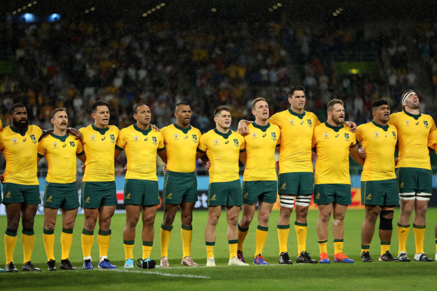

Since Australia is an island continent, it has been greatly shaped and inhibited by its isolation. At least 40,000 years ago, Aboriginal people developed their ability to adapt to the environment, during which time they had little contact with outsiders. The remoteness of Australia was a factor in Britain's decision to establish New South Wales as a penal colony in 1788. Historically, European perceptions of Australia have been impacted by the experience of exile and alienation as a result of its convict heritage. In spite of the distance from Britain, the isolation it imposed grew rather than diminished ties with it. Throughout the 20th century, Australia has been preoccupied with the ambivalence of the continuing colonial relationship. The culture of Australia was almost exclusively Anglo-Celtic until World War II. White Australia's exclusive policy helped maintain Australia's striking cultural homogeneity because the Aboriginal population was small and persecuted. Over the course of the 20th century, immigration and refugee laws were relaxed, and a large number of immigrants and refugees flooded into Australia and left their mark on the culture of that continent. Along with a dramatic increase in Aboriginal populations and the return of Aboriginal pride, positive government measures for redressing past injustices also spurred the revival of Aboriginal arts.
From the earliest days of colonization, the sport has been an important part of Australia. Among the earliest organized sports in Australia are Australian rules football, rugby league, rugby union, association football, and tennis. Australia's national identity has been shaped through sports, including the Australia vs USA basketball match in 2019 which attracted over 100,000 spectators, the Melbourne Cup, and America's Cup. With almost 110 000 fans watching the Wallabies play the All Blacks in 2000, Australia also holds the record for the largest attendance at a Rugby Union match. A relatively small country like Australia has a rich history in sport on the world stage and performs well above expectations in many instances. Australians are highly successful at Cricket, the largest national sport in Australia. Both Rugby League and Aussie Rules are popular in Australia.Water sports are also a favorite pastime for Australians and they have been world champions in swimming since the 1950s. Several swimmers have won multiple gold medals since the 1956 Melbourne Olympics, including Dawn Fraser, Shane Gould, Kieren Perkins, and Ian Thorpe. In 1956 and 2000, Australia hosted the Summer Olympics.
{kind=link}